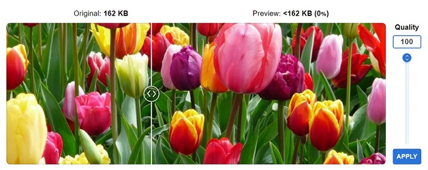
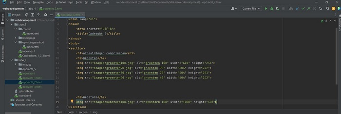
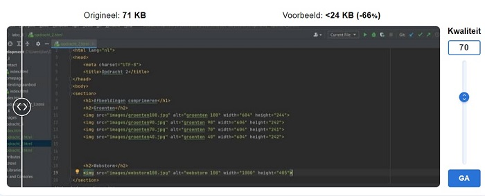
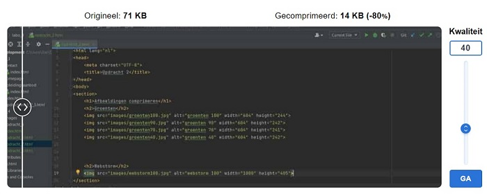

Tulpen

De kwaliteit verminderen naar 90%: De bestandsgrootte blijft gelijk. De kwaliteit vermindert nauwelijks.
Wanneer ik de kwaliteit verminder naar 70%, merk ik een verlies van 32% aan bestandsgrootte.
Bij kwaliteit aan 40% is de bestandsgrootte met iets meer dan de helft afgenomen.
Er is kwaliteitsverlies.
Webstorm
Orginele afbeelding:

 Er zijn grote stukken zwart, minder verschillende kleuren en minder details in vergelijking met het eerste voorbeeld van de tulpen.
De bestandsgrootte bij deze afbeelding vermindert veel sneller dan de afbeelding van de tulpen.
De tekst heeft duidelijk kwaliteitsverlies.